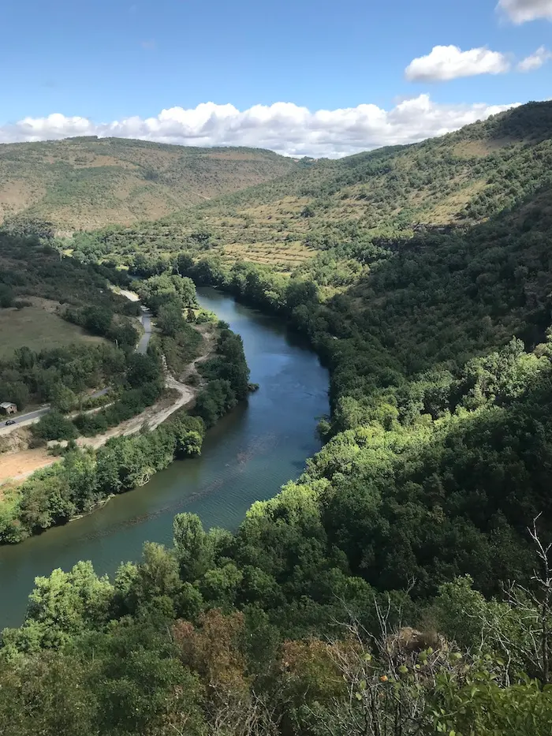

Vacances à Saint-Rome de Tarn en août 2023
Petit bilan de notre séjour dans les gorges du Tarn.
Le village de Saint-Rome de Tarn
Nous avons commencé notre séjour par une balade au-dessus du village. Tout ressemble énormément à par chez nous. Le relief et la végétation sont similaires.
Seule la couleur des édifices, plutôt rosée, diffère. Nous avons donc parcouru des kilomètres et découvert des sentiers de forêt, une zone de pique-nique, des plateaux venteux et une descente caillouteuse pour rejoindre le village.
Le camping
Nous avons ensuite rejoint le camping et découvert que notre balade en canoë était annulée. Le mauvais temps (quelques averses et du vent), une panne de camion, le patron parti qui est remplacé par son père ; il y avait l’embarras du choix comme excuse.
En fait, il semblerait qu’ils n’avaient pas très envie de nous emmener au point de départ, car il y avait peu de monde. On nous a proposé le lendemain (beaucoup de jeunes sont arrivés au camping, comme par hasard !), mais nous n’avions plus très envie de donner nos sous et nous préférions rentrer plus tôt. Le plus cool, c’était notre rencontre avec Coincoin, qui venait réclamer sa part du pique-nique.
Nous étions bien installés, la nouvelle tente est cool, bien spacieuse. Nous avons juste un peu oublié ce que c’est que de dormir au sol. Il ne fallait pas y passer dix jours ! Le camping est plutôt moyen. Le nécessaire de base y est, mais ce n’est pas extra non plus. L’accueil est mauvais, les services absents en cas de faible affluence. Bref, il était bien cher pour ce que c’était.
Les cascades
Faute de canoë, nous avons cherché la cascade des Baumes à pied. Un gentil habitant du village nous a indiqué le chemin d’une autre cascade, cachée dans les jardins. Agréable surprise. Le débit de la cascade des Baumes (ci-dessous) était assez faible. Il aurait été sympa de se baigner, nous aurions bien aimé, mais l’eau paraissait stagnante et il devait faire froid. Il y avait quand-même pas mal de vent.
Conclusion
C’est agréable de bouger, de voir autre chose, de se dépayser un peu. Le coin était sympa. Deux jours suffisaient amplement (43km de marche, tout de même !).